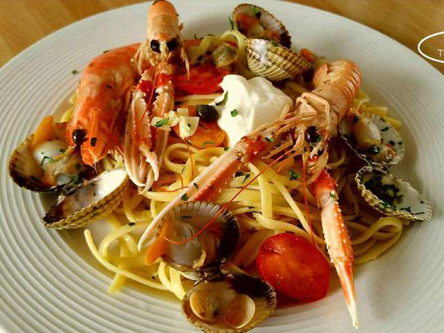

Cookpad - Que la cuisine rime avec plaisir! En cette période particulière de confinement, toute l’équipe de la DENM pense à vous et à vos proches. Pensez aux autres, restez chez vous et surtout prenez soin de vous.
Machines à Café Inissia | Nespresso Je peux stocker et organiser mes recettes, mes commentaires, créer des menus, etc. Aller sur mon carnet. Nouveautés. Anniversaire d'enfant : notre sélection pour une belle table de fête Notre sélection des meilleures cuisinières pour enfants. Suivez-nous. Suivez-nous sur les réseaux sociaux !
LES MEILLEURES RECETTES DE GATEAU Découvrez la Gamme de Machines à Café Inissia par Nespresso, la plus petite et colorée des Machines Nespresso avec toujours ce goût exceptionnel de café.
Recettes de cuisine | 750g De 4/6 à 36 mois, des gammes adaptées aux besoins spécifiques de bébé ! Des produits, conseils et des Recettes pour bébé !
Gateau : nos délicieuses recettes de gateau Bouillon Concentré Recettes. Trouvez votre idéal de saveur avec le bouillon concentré Campbell’s! Nos bouillons concentrés sont jusqu’à quatre fois plus concentrés que nos bouillons prêts à utiliser.
Recettes de cocktails et boissons Soif de recettes ? On se donne rendez-vous dans votre boîte mail ! Découvrir nos newsletters. Retrouvez Marmiton où que vous soyez en téléchargeant l'application. Concocté avec ♥ par Marmiton. Tous droits réservés Marmiton.org - 1999-2021.
Clea cuisine | recettes bio et veggie pour tous !
2021.04.13 13:09

Recettes Salées Sucrées Japonaises Autres Cuisiner les légumes autrement Cuisiner les fruits autrement Archives Bio attitude Mon bio placard Le bio moins cher S’organiser et établir des menus Liste de courses Comment stocker Peut-on cuisiner sainement ? Dossiers produits Mes livres Agar-agar, secret minceur des japonaises Apéro veggie Coaching Veggie Coing et rhubarbe Croquez salé ! Cuisiner les ingrédients japonais Des soupes qui nous font du bien Douceurs citron bio Flocons d’avoine Gingembre Je mange bio même en rando ! Kale L’Atelier bio – ingrédients, recettes et savoir-faire Matcha Mes p’tites gamelles, manger bio au bureau Mes pâtes à tartiner sucrées et salées Miso, tempeh et tofu fermenté Patate douce Petits pains express P’tit chef bio P’tit dèj santé Quinoa Recevoir en bio Solo et bio Tartes fines, grosses tourtes et belles tatins Tout Sans Gluten Variations potimarron Veggie – Je sais cuisiner végétarien Veggie Bowls Veggie burger Goodies Index des recettes par ingrédient pour « Tout Sans Gluten » Index des recettes pour ingrédients pour « Veggie » Recettes de mes livres à télécharger Coaching Recherchez une recette
recettes bio et veggie pour tous !
#à la Une
Sando : les sandwichs japonais
sandwichs 9 avril 2021
Cette semaine, mon cerveau a refusé de se remettre dans la configuration télétravail + travail scolaire + enfant à la maison du printemps dernier. A la place, on a décidé de se lancer dans une semaine à thème : les sandoichi, autrement dit les sandwichs japonais ! Les Japonais ne font pas les sandwichs comme nous, on s'en serait douté. D'abord parce que leur pain est différent, mais aussi parce qu'ils ne courent pas après les mêmes consistances. A bas la croûte croustillante, vive la mie douillette dans laquelle on ferait volontiers une sieste (ne me tentez pas). Vive le pain de mie blanc et ultra léger, très copieusement garni. L'un des sandwichs favoris des Japonais, c'est celui-ci (clic) :… Lire la suite
8 commentaires
#Et aussi...
Les mochis patates
Tarte aux endives, miso et tahin (pâte brisée au levain)